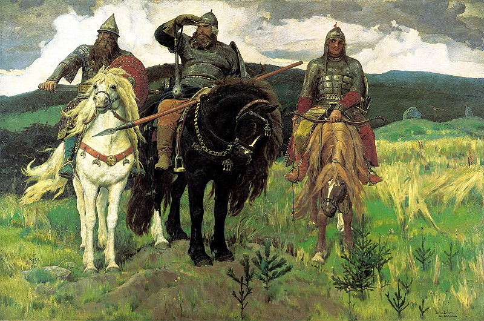

Охотники на привале - Василий Перов
Описание картины "В праздник - Николай Кузнецов":
Известное произведение Василия Перова, одного из ведущих русских художников второй половины XIX века, давно стало хрестоматийным примером бытового жанра в живописи. На рубеже 1860-1870-х годов художник оставляет остросоциальные темы и ищет отдохновение в отрадных сюжетах, посвященных природе, охоте, рыбалке. Перов с детства любил охоту и с гордостью называл себя знатоком «поющего и растущего мира». Хорошо знакомая ему незамысловатая мужская трапеза на лоне природы написана с нескрываемой иронией и вызывает в памяти ассоциации с завиральными литературными героями многочисленных охотничьих рассказов. Перов показывает мир «идеалистов, романтиков, людей восторженных и мечтательных», которые любят отдыхать в чаще леса или на берегу реки, подальше от городской суеты. Охотничьи предметы, так красноречиво «говорящие» о героях картины, собраны в отдельные натюрморты и являются важным дополнением в «сценарии» произведения. Теплый желтоватый тон, объединяющий все фрагменты полотна, ассоциируется с цветом глубокой осени. Перов показывает, как нужно «любить поэзию охоты», чтобы раскрепоститься, почувствовать себя сопричастным к первозданности и чистоте природного мира.
Больше информации о картине...